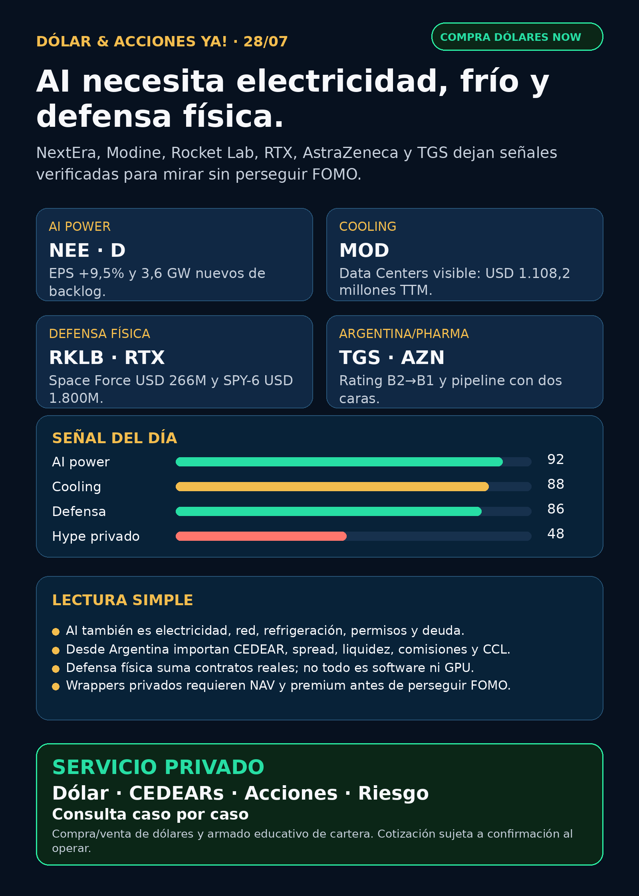

AI necesita electricidad, frío y defensa física.
NextEra/Dominion, Modine, Rocket Lab, RTX, AstraZeneca y TGS: AI power, cooling, defensa y capa Argentina sin recomendación de compra.
Texto WhatsApp
Placa del día

Dólar & Acciones YA — Stock Radar — 28/07
Fecha de edición: 2026-07-28. Research educativo para Argentina. No es recomendación personalizada de compra ni de venta.
Lectura simple del día
La señal fuerte de hoy vuelve a estar en la infraestructura física: electricidad, backlog de generación, cooling para data centers y defensa real. En criollo: la AI no vive solamente en un chip; consume megavatios, necesita contratos de energía, subestaciones, refrigeración, radares, lanzamientos y capital paciente.
Esto está ordenado por valor educativo/señal de radar. No es orden de compra. Buena empresa ≠ buen precio de entrada ≠ buen instrumento para Argentina ≠ buen tamaño dentro de una cartera.
Capa Argentina: dólar, CEDEARs e instrumento
BlueLytics: oficial vendedor ARS 1.520,00 y blue vendedor ARS 1.560,00; update 2026-07-28T08:45:51.732042-03:00. CriptoYa: blue ask ARS 1.560,00, USDT ask ARS 1.602,53, MEP AL30 ARS 1.537,24 (2026-07-27 16:59 -03), CCL AL30 ARS 1.591,31 (2026-07-27 16:59 -03).
Para operar de verdad se confirma en broker vivo: MEP/CCL pueden venir con timestamp de cierre previo, CEDEAR tiene ratio, spread, liquidez y comisiones, y una acción global no es automáticamente el mismo riesgo que su vehículo local. Si el activo no tiene vía local clara, queda como radar educativo o global hasta verificar instrumento.
Tesis central
El segundo peaje de la AI es electricidad + frío + defensa física. NEE/D muestran utilities con escala y backlog; MOD deja visible el negocio de data-center cooling; RKLB y RTX muestran contratos de defensa/aerospace; AZN recuerda que pharma no es sólo GLP-1; TGS deja recibo local argentino.
Señales educativas del día
1. Energía / utilities — NextEra (`NEE`) + Dominion (`D`)
- Qué pasó: NextEra reportó Q2 2026 con net income GAAP de USD 3.144 millones y adjusted earnings de USD 2.407 millones / USD 1,15 por acción, contra USD 1,05 del año anterior: adjusted EPS +9,5%. Energy Resources agregó 3,6 GW al backlog de renewables/storage. NEE/Dominion también presentaron solicitudes regulatorias para approvals de la combinación propuesta.
- Fuente primaria: SEC EX-99: https://www.sec.gov/Archives/edgar/data/753308/000075330826000058/neeq22026exhibit99.htm
- Lectura en criollo: utilities no son “aburridas” cuando el cuello de botella de AI es conseguir electricidad confiable. El riesgo es deuda, regulación, capex y retorno permitido.
- Accionable internacional/global:
NEEyDson tickers USA líquidos; requiere valuación, tasa, deuda y timing regulatorio. - Accionable local Argentina: acceso CEDEAR/liquidez no verificado en esta corrida. Si aparece en broker local, mirar spread, ratio y CCL implícito.
- Estado: señal fortalecida / seguimiento.
2. Cooling / thermal management — Modine (`MOD`)
- Qué pasó: 8-K del 24/07: Modine reorganizó Climate Solutions en dos segmentos separados, Data Centers y Commercial HVAC. El EX-99.1 recasteó Data Centers con ventas trimestrales de USD 183,7 millones, 225,0 millones, 297,6 millones y 401,9 millones; total 12 meses hasta 31/03/2026: USD 1.108,2 millones.
- Fuente primaria SEC: https://www.sec.gov/Archives/edgar/data/67347/000110465926086644/mod-20260724xex99d1.htm
- Lectura en criollo: cooling deja de ser “HVAC genérico” y se puede leer como negocio específico de data centers. Mejor visibilidad no significa precio barato: falta margen, backlog, competencia y valuación.
- Accionable internacional/global:
MOD; proxies relacionados:VRT,ETN,GEV,HUBB,PWR. - Accionable local Argentina: no confirmado como CEDEAR. Proxy local imperfecto vía energéticas/infraestructura no es la misma exposición.
- Estado: candidato radar fuera de watchlist.
3. Defensa física / space — Rocket Lab (`RKLB`) y RTX (`RTX`)
- Rocket Lab: la página oficial de Rocket Lab News lista el 27/07/2026 contrato récord de USD 266 millones con U.S. Space Force para suborbital launches. Fuente: https://rocketlabcorp.com/updates/record-contract-rslp-kodiak/
- RTX/Raytheon: contrato/extensión de USD 1.800 millones para hardware production and sustainment de SPY-6 radars para U.S. Navy; opciones llevarían el valor acumulado a USD 3.300 millones. Fuente primaria: https://www.rtx.com/news/news-center/2026/07/21/rtxs-raytheon-awarded-1-8-billion-hardware-production-and-sustainment-contract
- Lectura en criollo: defensa no es sólo drones de moda. También son radares, sensores, sustainment, ships, launch capacity, contratos plurianuales y capacidad de producción.
- Accionable internacional/global:
RKLBhigh-beta/space-defense yRTXprime industrial. No son el mismo riesgo. - Accionable local Argentina: disponibilidad CEDEAR/liquidez debe verificarse antes de hablar de ejecución.
- Estado: señal fortalecida / seguimiento. Para RKLB, auditar términos completos/DoD si va a ser headline de compra humana.
4. Pharma / salud — AstraZeneca (`AZN`) con señal mixta
- Qué pasó positivo: Sonesitatug vedotin mostró mejora estadísticamente significativa y clínicamente relevante en overall survival para 2nd+ line CLDN18.2-positive advanced gastric/GEJ cancers; AZN compartirá datos con reguladores.
- Qué pasó negativo: Ultomiris Phase III en HSCT-TMA adulto/adolescente no alcanzó significancia estadística en event-free survival.
- Fuentes primarias SEC: https://www.sec.gov/Archives/edgar/data/901832/000165495426006895/a9459n.htm y https://www.sec.gov/Archives/edgar/data/901832/000165495426006897/a8707n.htm
- Lectura en criollo: pipeline pharma tiene dos caras: un estudio positivo fortalece una parte de la tesis, un fracaso debilita otra indicación. No todo comunicado de pharma es “comprar”.
- Accionable internacional/global:
AZNADR/global; falta valuación, impacto comercial y timing regulatorio. - Accionable local Argentina: CEDEAR/liquidez no verificado en esta corrida.
- Estado: mixto: oncology fortalece; rare disease puntual debilita.
5. Argentina energía — TGS (`TGS` / `TGSU2`)
- Qué pasó: TGS informó vía 6-K que Moody’s subió el rating de sus notes de B2 a B1 tras upgrade soberano argentino.
- Fuente primaria SEC: https://www.sec.gov/Archives/edgar/data/931427/000093142726000009/tgs.htm
- Lectura en criollo: es mejora de crédito/contexto, no descubrimiento operativo. Suma para leer riesgo argentino, pero no alcanza solo para decidir entrada.
- Accionable local Argentina:
TGSU2/acción local o ADRTGS, según broker. Falta precio, volumen, spread, CCL implícito y comisiones. - Estado: fortalece crédito menor / vigilancia.
6. Private wrappers — Robinhood Ventures Fund I (`RVI`)
- Qué pasó: Form 4 del 24/07: Robinhood Markets vendió 28.431 acciones de RVI por aprox. USD 764.858; VWAP aproximado USD 26,90.
- Fuente primaria SEC XML: https://www.sec.gov/Archives/edgar/data/2085091/000178387926000101/wk-form4_1784928110.xml
- Lectura en criollo: un wrapper privado no equivale a comprar SpaceX/OpenAI directo. Hay que mirar NAV, premium/descuento, holdings, sponsor sales, float, restricciones y liquidez.
- Estado: vigilar riesgo de instrumento / no elevar como oportunidad sin NAV y acceso.
Watchlist priorizada de hoy
- RKLB: señal nueva fuerte por contrato Space Force listado por Rocket Lab; high-beta y términos a auditar.
- NVDA: sin filing nuevo fuerte 24–72h; moat estructural vigente por AI infra, HBM y data centers.
- PLTR: Form 4/SARs de ejecutivo no es señal operativa; valuación sigue como riesgo.
- TSM: 6-K reciente con capital appropriations
None; señal neutral, no catalyst de capex. - MU: venta insider menor no cambia tesis HBM/memory.
- GOOGL/GOOG: sin filing core nuevo fuerte; cloud/TPU/data center sigue estructural.
- AAPL: sin señal primaria nueva; no vender como AI moat automático.
- HOOD: sin noticia primaria nueva de Agentic Trading; entra indirectamente por
RVI. - TSLA: robotaxi/NHTSA queda audit-only si no hay primaria.
- ASML: moat EUV/High-NA vigente; sin noticia primaria nueva. ASML sí / all-in no.
- Gold / GLD / GOLD / B: instrumento ambiguo. No reportar precio ni tesis hasta confirmar activo exacto.
- SNDK / CBRS: sin señal nueva superior; CBRS sigue radar alto por OpenAI/AWS/customer concentration.
Energía y power hardware
- Utilities/generation:
NEE/Dson la señal principal de AI power. - Cooling:
MODse vuelve candidato educativo por segmento Data Centers visible. - Transformadores / power hardware: Hitachi Energy, Siemens Energy, GE Vernova, HD Hyundai Electric, Hyosung HICO, Virginia Transformer y Delta Star revisados; sin primaria nueva 24–72h mejor que NEE/MOD. Tesis vigente: transformadores, switchgear, subestaciones y lead times siguen cuello de botella.
- Argentina energía:
TGScon upgrade B2→B1;YPF,PAM/PAMP,VIST,CEPUrevisadas sin primaria fresca superior hoy. - Nuclear/uranio: revisado sin señal primaria fuerte nueva.
Pharma / salud
AZNdejó noticia útil porque muestra el pipeline con una señal positiva y otra negativa.NVOtuvo buyback, no catalyst clínico GLP-1 nuevo.LLY/NVO GLP-1,PFE,MRK: revisados; no elevar claims de analistas/RSS sin FDA/company/openFDA actual.ONCY: notice Nasdaq por minimum bid price; biotech high-risk, no oportunidad por sí misma.
Radar amplio fuera de watchlist
- Defensa/aeroespacial:
AVAV, GE Aerospace,LMT,NOC,GD,HWM,KTOS,BA,ITA/XARrevisados. Hoy las señales primarias mejores fueronRKLByRTX. - Space / orbital AI:
SPCX/SpaceX/Starlink/Starship y wrappers revisados; sin filing material fresco verificado. Radar alto estructural, no accionable por default. - Autonomous mobility / physical AI: Tesla, Waymo/Alphabet, Uber, Zoox/Amazon y Joby revisados; sin primaria nueva fuerte.
- Fintech / AI agents: Robinhood Agentic Trading queda como tesis estructural ya indexada; sin disclosure nuevo.
- Crypto gobernado: sin input nuevo fuerte. Se mantiene carril educativo/infraestructura, no token trade.
- Intel (
INTC): 10-Q con Q2 revenue USD 16.128 millones y net loss attributable de USD 11.033 millones; DCAI revenue USD 6.262 millones. Turnaround semis/AI CPU con riesgo contable fuerte.
Red flags / hype para ignorar
- “AI = sólo NVIDIA”: incompleto. También hay electricidad, red, cooling, permisos y deuda.
- “Contrato de defensa = compra automática”: no. Mirar margen, backlog, integración, financiamiento, valuación y volatilidad.
- “Pharma positivo = todo pipeline ganador”: no. AZN mostró positivo y negativo en la misma noche.
- “RVI/DXYZ = SpaceX/OpenAI barato”: no sin NAV, premium, holdings y liquidez.
- “Gold/GLD/GOLD/B”: bloqueado hasta confirmar instrumento exacto.
Qué mirar después
1. Próimos filings/earnings de NEE, D, GEV, MOD, VRT, ETN y power hardware.
2. Confirmación DoD/Space Force y términos completos del contrato RKLB.
3. Backlog/margen y capacidad de producción de RTX/defensa física.
4. Impacto regulatorio/comercial de AZN Sone-Ve y lectura del fracaso Ultomiris.
5. NAV/premium/descuento de RVI/DXYZ antes de hablar de private wrappers.
6. CEDEARs, MEP/CCL, spread y liquidez si alguna tesis pasa a análisis de cartera humana.
Portfolio/base Mi Simulación
La cartera de Ricardo fue liquidada, devuelta y terminada según estado vigente del 24/06. No hay acciones compradas ni P&L activo que reportar. Esta sección queda como vigilancia para próxima compra o nuevo inversor, no como rendimiento real.
Recibo visible de cobertura
Revisado: watchlist base, AI infra/semis, energéticas argentinas, transformadores/power hardware, pharma/GLP-1/oncology, defensa/aeroespacial, space/private wrappers, autonomía/physical AI, fintech/AI agents, crypto gobernado y mercado amplio. Si un carril no aparece arriba, fue porque no tuvo señal primaria nueva más fuerte.
Servicio privado
Dólar · Acciones · Consulta privada. Si querés comprar o vender dólares, entender CEDEARs, armar una cartera o revisar riesgo, se ve por privado caso por caso. Cotización de dólares sujeta a confirmación al momento de operar.
Disclaimer
Esto es research educativo para decisión humana. No es asesoramiento financiero personalizado ni instrucción de compra/venta.